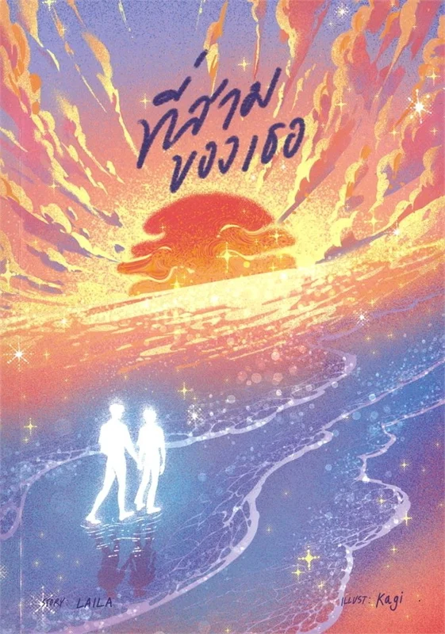
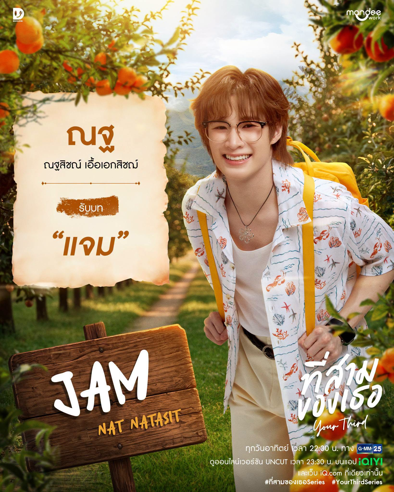
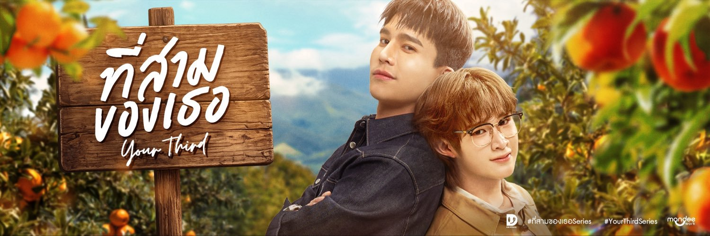

“แค่เสือเจ็บหนีไปพักใจ หายดีเมื่อไหร่จะกลับมา”
นิยาย Boy Love แนวโรแมนติกคอมเมดี้ ฟีลกู้ด เรื่องราวที่เต็มไปด้วยความวุ่นวาย แต่กลับพาใจใครบางคนหวั่นไหว แต่งโดยนามปากกา LAILA (ไลลา)
อ่านเรื่องย่อเรื่องราวของ "สาม ไตรภพ อดิศวร" นายใหญ่แห่งไร่อดิศวร ที่แอบรักคนคนหนึ่งมานานหลายปี แต่กลับโดนพี่ชายตัวเองปาดหน้าแย่งสารภาพรักและคบกันไปก่อน ด้วยความช้ำรักเขาจึงหนีไปพักใจไกลถึงเกาะทางภาคใต้ ทำให้พี่ชายต้องส่ง "แจม จีรณัช คิเคะงาวะ" ผู้ช่วยเลขานุการสุดเนี้ยบและเก่งกาจ ให้เดินทางตามตัวเขากลับมางานแต่งงานให้ทันภายใน 2 สัปดาห์ จากคู่กัดที่พระเอกสุดดื้อไม่ยอมกลับง่าย ๆ แถมยังต้องจับพลัดจับผลูพากันหนีตาย และติดเกาะไปด้วยกัน ความใกล้ชิดในสถานการณ์ต่าง ๆ จึงทำให้ความสัมพันธ์จากคู่กัดค่อย ๆ พัฒนาไปเป็นความรักแบบอบอุ่น
ทำไมควรอ่านหนังสือเรื่องนี้
เนื้อเรื่องสนุก ทำให้ผู้อ่านได้คลายเครียด
ตัวละครหลักมีมุมมองในหลายมุม ไม่ตลกอย่างเดียว
แสดงให้เห็นข้อคิดเกี่ยวกับทุกความสัมพันธ์
นักแสดงผู้รับบทตัวละครหลัก

รับบทโดย ณฐ ณฐสิชณ์
รับบทโดย แม้ก กรธัสส์
